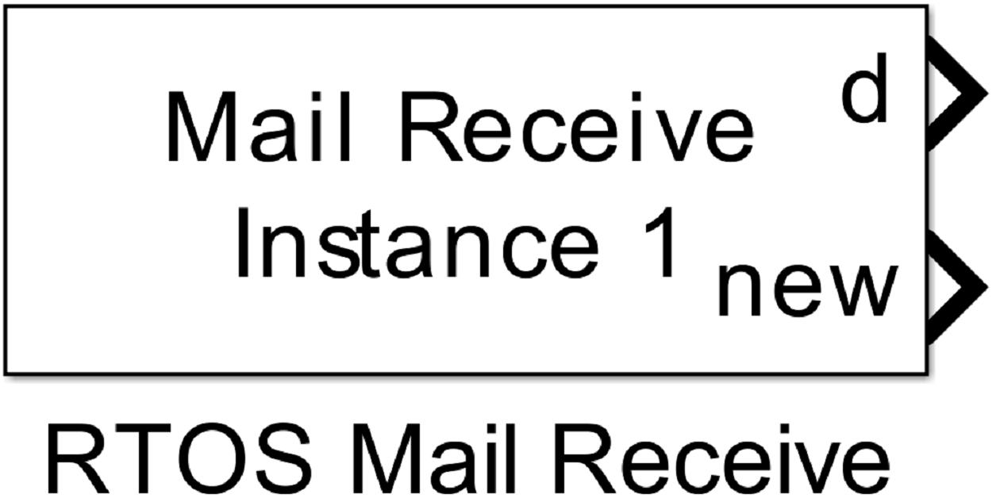
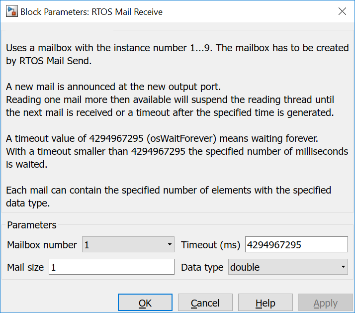

6.5. Mail Receive
6.5.1. Description
Uses a mailbox with the instance number 1…9. The mailbox has to be created by RTOS Mail Send.
A new mail is announced at the new output port. Reading one mail more then available will suspend the reading thread until the next mail is received or a timeout after the specified time is generated.
A timeout value of 4294967295 (osWaitForever) means waiting forever. With a timeout smaller than 4294967295 the specified number of milliseconds is waited.
Each mail can contain the specified number of elements with the specified data type.
{kind=link}
6.5.2. Data Type Support
The output port d writes values with configured data type. Single or vector values are written, depending on the configured Mail size.
The output port new writes an uint8 value of 1 when a new mail is received. Otherwise a 0 is written.
Warning
You must use the same number of elements per mail and data type as configured in the connected Mail Send block. For code generation only the information in Mail Send are used but Simulink data type checking would fail with incorrect values.
6.5.3. Parameters and Dialog Box
6.5.3.1. Mailbox number
specifies an internal mail box number. It is used to generate a unique instance name to allow several mail boxes in a model and to tie Mail Send and Mail Receive blocks together.
6.5.3.2. Timeout
specifies the timeout in milliseconds. A value of 4294967295 (osWaitForever) means waiting forever.
6.5.3.3. Mail size
specifies the number of data elements in each mail.
6.5.3.4. Data type
specifies the data type of the elements in a mail. All data elements have the same type. The following types are possible:
- double
- single
- int8
- uint8
- int16
- uint16
- int32
- uint32
6.5.4. Example 1
The example realises a LED blinking with sending the on/off information over mails. The generator creates periodically these mails. The function-call subsystem runs in a Thread in an endless loop without wait. But reading from an empty Mail queue blocks the thread until a message is received. When it received one, the contents, a single uint8 value, is written to LED1. The following mail.get() in Mail Receive block blocks again until the next mail is generated.

6.5.5. Example 2
The example realises again a LED blinking. The generator creates again periodically mails with the on/off information. The function-call subsystem runs in a Thread in an endless loop without wait. The UserButton enables/disables the enabled subsystem in the function-call subsystem. The content of the enabled subsystem is identical to the function-call subsystem in example 1. In this example the reading from the mail queue can be stoped. Resulting in a full mail queue after a short moment, resulting in an enabled error led (LED2). When releasing the UserButton the mail queue is emptied - blinking starts again - and the error led is disabled.

6.5.6. Code Generation
Instance name of mbed class Mail is created by concatenating mail_box and the Mailbox number: mail_box<Mailbox number>
6.5.6.1. Step Function
creates this block in void <Model Name>_step(void) function
osEvent evt<Mailbox number> = mail_box<Mailbox number>.get(<Timeout>);
if(evt<Mailbox number>.status == osEventMail)
{
mail<Mailbox number>_T *mail<Mailbox number>_ptr = (mail<Mailbox number>_T*)evt<Mailbox number>.value.p;
memcpy(<pointer to output port d data vector>, mail<Mailbox number>_ptr, mail<Mailbox number>_len);
mail_box<Mailbox number>.free(mail<Mailbox number>_ptr);
<output port new> = 1;
}
else
{
<output port new> = 0;
}
Here is a concrete example with Mailbox number = 1 and Timeout = 4294967295 (osWaitForever)
osEvent evt1 = mail_box1.get(osWaitForever);
if (evt1.status == osEventMail) {
mail1_T *mail1_ptr = (mail1_T*)evt1.value.p;
memcpy(&rtb_RTOSMailReceive_o1, mail1_ptr, mail1_len);
mail_box1.free(mail1_ptr);
rtb_RTOSMailReceive_o2 = 1;
} else {
rtb_RTOSMailReceive_o2 = 0;
}